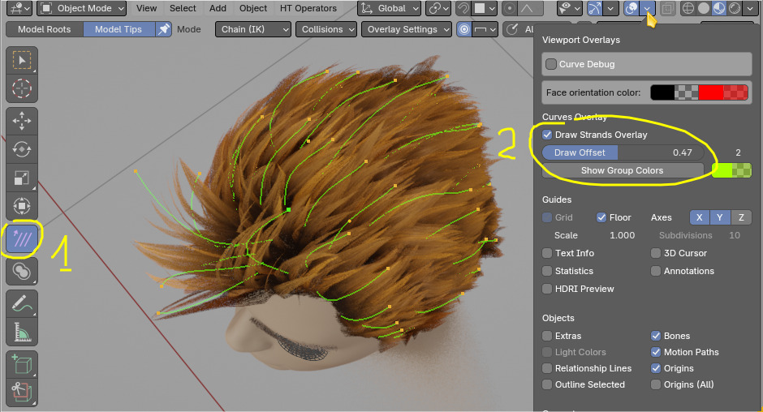
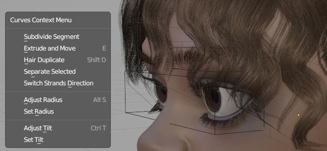

Hair Modeling¶
Example of Hair Modeling: Cutting the tails and then transforming using Root mode
Modeling workspace tools will allow you model hair strands with:
- Transformation tools, with rope like physics or 'Root' mode - rotate strands round their roots,
- Extend - to lengthen shorten the strands, [E] - key
- Knife cut - to cut strands, [K] - key, then click 2x to define cut line
- Linear Deformer (bend, rotate, scale, move), [Ctrl+D] - key
- duplicate/delete strands, with [Shift+D] and [X] or [Del] keys
- adjust tilt and taper, with [Ctrl+T] for tilt and [Alt+S] for radius
- and more
Example of Hair Modeling tool in action. Selection Groups are used, to select only some of strands
Location¶
Hair Modeling tool can be enabled from:

- Left sidebar [T]-key > Hair Modeling Tool (1) - available in Object and Curves Sculpt modes,
- Viewport gizmos button (2) on image below, has to be enabled,
Transform Modes¶
There are three strands translation/movements modes (use with G, R, S keys):
- Chain mode (IK), move hair endings with rope like behavior
- Normal (FK) mode, works similar to Blender built-in proportional editing.
- Root rotate/scale hair using root as pivot point
Showcasing Chain (IK) transform mode. Since HT 3.4 IK mode supports collisions of hair strands with scalp mesh
Hotkeys¶
Note: Switching to Hair Modeling Tool will override some default Blender 3D view shortcuts. To select other objects use Alt+RMB (since RMB button will select hair tip - rather than object)
In round brackets I marked optional modifier keys e.g. (Alt).
| Hotkey | Selections |
|---|---|
| Ctrl+MMWheel | Offset selection |
| (Shift)+RMB | Select Points |
| (Alt)+A | (de)Select All |
| Ctrl+I | Invert Selection |
| (Alt)+B+LMB | Box (de)Select |
| (Alt)+C | Circle (de)Select |
| Ctr+(Alt)+LMB | Lasso (de)Select |
| Hotkey | Translation |
|---|---|
| G, R, S | Grab, Rotate, Scale |
| Hotkey | Add/Delete |
|---|---|
| X, Del | Delete Selected |
| Shift+D | Duplicate strands |
| Hotkey | Radius/Tilt |
|---|---|
| Alt+S | Adjust Radius |
| Alt+R | Reset Radius |
| Ctrl+T | Adjust Tilt |
| Alt+T | Reset Tilt |
| Hotkey | Modeling |
|---|---|
| Ctrl+D | Linear Deformer |
| K | Cut strands |
| E | Extend strands |
| I | Straighten strands |
Offset selection¶
Ctrl + MMB scroll - changes which point along the strand length can be selected
Linear Deformer¶
Ctrl+D - rotate, bend, scale, move selected curves using on screen gizmo (special thanks to Mira Tools developer for letting me include modified version of his tool in HTool)
Extend¶
E - adjust length of selected strands
Duplicate and Delete¶
Shift+D - duplicate; X or Del delete selected strands
Knife¶
K - cut selected strands. Define cut line using LMB (first to mark start point, then next LMB click to mark end point)
Edit Mode¶
Blender 3.6 does not have basic modeling tools for new hair curves. Few of them were added to Hair Tool.
 W - menu in edit mode